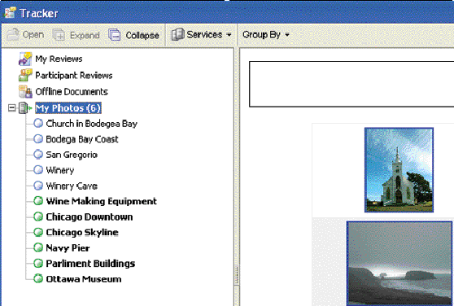

Customization Examples¶
This chapter provides two examples of customizing the Tracker user interface. To implement these examples, place the code in a directory that is published by a web server.
Note
In both examples, it is assumed that the example code is located at http://example.org/path.
Grouping elements¶
You can group elements by customizing an RSS feed in an RSS 2.0 XML document that uses the inbox:groupBy element. In this case, the grouping is accomplished through the creation of a timeZone element defined in the XML namespace http://example.org/myInfoNamespace/, using the following syntax:
<inbox:groupBy>http://example.org/myInfoNamespace/:timeZone</inbox:groupBy>
In this RSS document, the <rss> tag defines the XML namespace used in this sample for timeZone and assigns it to the namespace prefix info , as shown in the following code:
<rss version="2.0" xmlns:inbox="http://ns.adobe.com/Acrobat/RSS/Inbox/"
xmlns:info="http://example.org/myInfoNamespace/">
This makes it possible for each RSS feed item to include an info:timeZone tag and use it to assign each item to the correct group. For example, the following element is included in one of the items so that it is assigned to the group for Central Standard Time:
<info:timeZone>Central Standard Time</info:timeZone>
Tracker uses this metadata to perform its grouping operations, while other RSS aggregators ignore the information. You can experiment with this by changing the following RSS document so that Tracker performs the grouping using the info:state tag. You can do this by changing the inbox:groupBy element.
<rss version="2.0" xmlns:inbox="http://ns.adobe.com/Acrobat/RSS/Inbox/"
xmlns:info="http://example.org/myInfoNamespace/">
<channel>
<title>Example1</title>
<link>http://example.org/Example1</link>
<description>Example of how to extend Tracker with
Tags</description>
<language>en-gb</language>
<!-- Refresh once every 10 minutes -->
<ttl>10</ttl>
<!-- Group the elements by our custom metadata -->
<inbox:groupBy>http://example.org/myInfoNamespace/:timeZone</inbox:groupBy>
<!-- Set an icon for the feed using a relative URL -->
<inbox:icon>Circle.png</inbox:icon>
<item>
<title>Chicago</title>
<info:timeZone>Central Standard Time</info:timeZone>
<info:state>IL</info:state>
<!-- Set an icon for the item using a relative URL -->
<inbox:icon>Square.png</inbox:icon>
<link>http://example.org/Chicago</link>
<guid>http://example.org/Chicago</guid>
<description>The Windy City</description>
</item>
<item>
<title>San Francisco</title>
<info:timeZone>Pacific Standard Time</info:timeZone>
<info:state>CA</info:state>
<!-- Set an icon for the item using a relative URL -->
<inbox:icon>Square.png</inbox:icon>
<link>http://example.org/SF</link>
<guid>http://example.org/SF</guid>
<description>Home of the Golden Gate Bridge</description>
</item>
<item>
<title>New York</title>
<info:timeZone>Eastern Standard Time</info:timeZone>
<info:state>NY York</info:state>
<!-- Set an icon for the item using a relative URL -->
<inbox:icon>Square.png</inbox:icon>
<link>http://example.org/NY</link>
<guid>http://example.org/NY</guid>
<description>The Big Apple</description>
</item>
<item>
<title>Boston</title>
<info:timeZone>Eastern Standard Time</info:timeZone>
<info:state>MA</info:state>
<!-- Set an icon for the item using a relative URL -->
<inbox:icon>Square.png</inbox:icon>
<link>http://example.org/Boston</link>
<guid>http://example.org/Boston</guid>
<description>Bean Town</description>
</item>
<item>
<title>Philadelphia</title>
<info:timeZone>Eastern Standard Time</info:timeZone>
<info:state>PA</info:state>
<!-- Set an icon for the item using a relative URL -->
<inbox:icon>Square.png</inbox:icon>
<link>http://example.org/Philadelphia</link>
<guid>http://example.org/PhiladelphiaNY</guid>
<description>Cheese Steaks</description>
</item>
</channel>
</rss>
Adding an external interface driver¶
The following graphic shows a Group By button added to the user interface through the use of an external JavaScript driver.
The driver is referenced with the inbox:feedUI tag in the RSS document, loaded from the server, and stored persistently on the client while it is needed. The driver provides a toolbar button that allows dynamic grouping of photos within the user interface.
The RSS document introduces an XML namespace called photo , which is used for the custom metadata:
<rss xmlns:inbox="http://ns.adobe.com/Acrobat/RSS/Inbox/"
xmlns:photo="http://example.org/Photos/" version="2.0">
This provides the metadata used by the user interface driver. For example, each item contains custom metadata for event and location, as shown in the following code:
<photo:event>Day Trip</photo:event>
<photo:location>Bodega Bay</photo:location>
To bind the RSS document to a JavaScript user interface driver, use the inbox:feedUI tag with a relative URL. In this case, the driver file is in the same URL location as the RSS file:
<inbox:feedUI>Example2.js</inbox:feedUI>
The user interface driver consists of the following methods:
createToolBarshouldGroupgroupItemcreateContext
The createToolBar method creates the toolbar by returning an array object containing one element for each toolbar button. In this case, it adds the Group By button, which has a menu allowing the user to group items according to the following choices: None, Location, or Event. The Location and Event options correspond to the photo:location and photo:event tags in the RSS document:
aFileTypes:
[
["None", ""],
["Location", "http://example.org/Photos/:location"],
["Event", "http://example.org/Photos/:event"]
],
The user’s choice is stored in the cGroup member variable, and the method forces the RSS feed to update by invoking the RSS.update method:
var val = this.aFileTypes[i];
...
cValue: val[1],
onExecute: function(selection)
{
this.oUI.cGroup = this.cValue;
RSS.update(selection.feed.URL, true);
},
The shouldGroup method determines whether grouping should apply to the current selection by examining the cGroup member variable. In this case, if the user chose None then the string assigned to cGroup would have a length of zero:
shouldGroup: function(selection)
{
return this.cGroup.length != 0;
},
The groupItem method determines which group should be applied to the selection object, which it receives as a parameter. It does this by returning the value of the metadata element, which it retrieves through the item.Extension object:
groupItem: function(selection)
{
return selection.item.Extension[this.cGroup];
},
The createContext method generates the right portion of the user interface based on the current selection. The layout is a simple HTML view, so creating the context view is accomplished by generating HTML according to the current selection. The method returns a JavaScript object containing the following methods and properties:
initializeonSelectionChangedshowFeedViewshowItemViewdescription
These are described below.
The initialize method is called when the driver is initialized and stores a copy of the dialog object for future use.
The onSelectionChanged method is called when a feed is selected. The selection may be the root level for the current subscription (the feed), an item, or a group. This method determines the selection type and calls the corresponding method for the type of item selected.
The showFeedView method generates an HTML string (content ) that is used to produce a table containing thumbnails for each photo. If a group is selected, it displays only those feed items belonging to the group. Once the HTML string is created, it is loaded into the HTML view, which has a view identifier of "html" .
var stm = SOAP.streamFromString(content);
dialog.load({"html": stm});
The showItemView method is similar to the showFeedView method, but is restricted to the current item.
The description property contains the view description. In this case it contains generic wrapper view elements that control alignment and an HTML view. This is where all the content is generated when the selection changes (using dialog.load ).
The RSS document and user interface driver code are as follows:
<?xml version="1.0"?>
<rss xmlns:inbox="http://ns.adobe.com/Acrobat/RSS/Inbox/"
xmlns:photo="http://example.org/Photos/" version="2.0">
<channel>
<title>My Photos</title>
<link>http://example.org/</link>
<description>My Photos</description>
<!-- Add a UI driver for this feed -->
<inbox:feedUI>Example2.js</inbox:feedUI>
<ttl>60</ttl>
<item>
<title>Church in Bodegea Bay</title>
<link>bodega bay church.jpg</link>
<description><a href="bodega bay church.jpg"><
img width=500
src="bodega bay church.jpg"></a>
</description>
<guid>bodega bay church.jpg/PTO.pdf</guid>
<!-- Custom Metadata in our namespace - event and location -->
<photo:event>Day Trip</photo:event>
<photo:location>Bodega Bay</photo:location>
<pubDate>Sun, 22 Dec 2002 17:49:45 GMT</pubDate>
</item>
<item>
<title>Bodega Bay Coast</title>
<link>IM000853.JPG</link>
<description><a href="IM000853.JPG"><
img width=500 src="IM000853.JPG"></a>
</description>
<guid>IM000853.JPG</guid>
<photo:event>Day Trip</photo:event>
<photo:location>Bodega Bay</photo:location>
<pubDate>Wed, 01 Jan 2003 17:49:45 GMT</pubDate>
</item>
<item>
<title>San Gregorio</title>
<link>IM002002_edited.JPG</link>
<description><a href="IM002002_edited.JPG"><
img width=500 src="IM002002_edited.JPG"
></a>
</description>
<guid>IM002002_edited.JPG</guid>
<photo:event>Day Trip</photo:event>
<photo:location>San Gregorio</photo:location>
<pubDate>Wed, 09 Jul 2003 17:49:45 GMT</pubDate>
</item>
<item>
<title>Winery</title>
<link>IM002265_edited.JPG</link>
<description><a href="IM002265_edited.JPG"><
img width=500 src="IM002265_edited.JPG"
></a>
</description>
<guid>IM002265_edited.JPG/PTO.pdf</guid>
<photo:event>Day Trip</photo:event>
<photo:location>Napa</photo:location>
<pubDate>Wed, 09 Jul 2003 17:49:45 GMT</pubDate>
</item>
<item>
<title>Winery Cave</title>
<link>IM002285.JPG</link>
<description><a href="IM002285.JPG"><img width=500
src="IM002285.JPG"></a>
</description>
<guid>IM002285.JPG</guid>
<photo:event>Day Trip</photo:event>
<photo:location>Napa</photo:location>
<pubDate>Wed, 09 Jul 2003 17:49:45 GMT</pubDate>
</item>
<item>
<title>Wine Making Equipment</title>
<link>IM002293.JPG</link>
<description><a href="IM002293.JPG"><img width=500
src="IM002293.JPG"></a>
</description>
<guid>IM002293.JPG</guid>
<photo:event>Day Trip</photo:event>
<photo:location>Napa</photo:location>
<pubDate>Wed, 09 Jul 2003 17:49:45 GMT</pubDate>
</item>
<item>
<title>Chicago Downtown</title>
<link>IM002311.JPG</link>
<description><a href="IM002311.JPG"><img width=500
src="IM002311.JPG"></a>
</description>
<guid>IM002311.JPG</guid>
<photo:event>Christmas</photo:event>
<photo:location>Chicago</photo:location>
<pubDate>Wed, 09 Jul 2003 17:49:45 GMT</pubDate>
</item>
<item>
<title>Chicago Skyline</title>
<link>IM002313.JPG</link>
<description><a href="IM002313.JPG"><img width=500
src="IM002313.JPG"></a>
</description>
<guid>IM002313.JPG</guid>
<photo:event>Christmas</photo:event>
<photo:location>Chicago</photo:location>
<pubDate>Wed, 09 Jul 2003 17:49:45 GMT</pubDate>
</item>
<item>
<title>Navy Pier</title>
<link>IM002327.JPG</link>
<description><a href="IM002327.JPG"><
img width=500 src="IM002327.JPG"></a>
</description>
<guid>IM002327.JPG</guid>
<photo:event>Christmas</photo:event>
<photo:location>Chicago</photo:location>
<pubDate>Wed, 09 Jul 2003 17:49:45 GMT</pubDate>
</item>
<item>
<title>Parliment Buildings</title>
<link>IM002583.JPG</link>
<description><a href="IM002583.JPG"><img width=500
src="IM002583.JPG"></a>
</description>
<guid>IM002583.JPG</guid>
<photo:event>Christmas</photo:event>
<photo:location>Ottawa</photo:location>
<pubDate>Wed, 09 Jul 2003 17:49:45 GMT</pubDate>
</item>
<item>
<title>Ottawa Museum</title>
<link>IM002613.JPG</link>
<description><a href="IIM002613.JPG"><img width=500
src="IM002613.JPG"></a>
</description>
<guid>IM002613.JPG</guid>
<photo:event>Christmas</photo:event>
<photo:location>Ottawa</photo:location>
<pubDate>Wed, 09 Jul 2003 17:49:45 GMT</pubDate>
</item>
</channel>
</rss>
function CreateExample2UIObject()
{
var ui =
{
cGroup: "",
instance: null,
createToolBar: function()
{
var result =
[
{
oUI: ui,
cType: "button",
cName: "org.example.example2.groupBy",
cDisplayName: "Group By",
cTip: "Group Photos by the selected property",
aFileTypes:
[
["None", ""],
["Location", "http://example.org/Photos/:location"],
["Event", "http://example.org/Photos/:event"]
],
getMenu: function(selection)
{
var result = new Array;
for(var i in this.aFileTypes)
{
var val = this.aFileTypes[i];
result[result.length] =
{
oUI: this.oUI,
cName: val[0],
cDisplayName: val[0],
cValue: val[1],
onExecute: function(selection)
{
this.oUI.cGroup = this.cValue;
RSS.update(selection.feed.URL, true);
},
onMarked: function(selection)
{
return this.oUI.cGroup == this.cValue;
}
};
}
return result;
}
}
];
return result;
},
shouldGroup: function(selection)
{
return this.cGroup.length != 0;
},
groupItem: function(selection)
{
return selection.item.Extension[this.cGroup];
},
createContext: function()
{
this.context =
{
driver: ui,
initialize: function(dialog)
{
ui.instance = dialog;
},
onSelectionChanged: function(dialog)
{
if(dialog.isItemSelection())
this.showItemView(dialog);
else if(
dialog.isFeedSelection() ||
dialog.isGroupSelection()
)
this.showFeedView(dialog);
},
showFeedView: function(dialog)
{
var feed = dialog.getFeed();
var extension = feed.Extension;
var content = "<HTML><HEAD><STYLE TYPE="text/css">.
evenBkg {background-color: #EDF3FE; }.
oddBkg {background-color: #ffffff; }.
titleBkg { background-color: #EEEEEE; }.
column { padding: 5px; }</STYLE></HEAD><BODY>";
content += "<BASE href="" + feed.URL + "">";
content += "<DIV style="font-family:sans-serif;
font-size:120%;
padding: 5px;
border: 1px solid #000000;
text-align: center;">";
content += "<B>" + feed.Title + "</B><BR>";
if(dialog.isGroupSelection())
content += dialog.getSelection();
content += "<BR></DIV>";
content += "<BR>";
content += "<CENTER>";
var items = feed.Items;
if(typeof items != "undefined" && items.length > 0)
{
content += "<TABLE align=center cellspacing=0
cellpadding=5 style="width: 75%;
border: 1px solid #EEEEEE;
text-align:center">";
for(var i in items)
{
var item = items[i];
if(item.Extension["http://ns.adobe.com/Acrobat/RSS/Inbox/:hidden"])
continue;
if(dialog.isGroupSelection())
{
if(item.Extension[this.driver.cGroup] != dialog.getSelection())
continue;
}
var background = "oddBkg";
if(highlight) background = "evenBkg";
var link = "<A STYLE="color: #000000;
text-decoration: none" href="" +
item.Link + ""/>";
content += "<TR CLASS="" + background + "">";
content += "<TD>" + link + "<IMG height=100 src="" +
item.Link + ""></A></TD>";
content += "<TD>" + link;
content += item.Title
content += "</A></TD>";
content += "</TR>";
highlight = !highlight;
}
content += "</TABLE>";
}
content = content + "</BODY></HTML>";
var stm = SOAP.streamFromString(content);
dialog.load({"html": stm});
},
showItemView: function(dialog)
{
if(!dialog.isItemSelection()) return;
var selection = dialog.getSelection();
var content = "<html><body>";
content += "<BASE href="" + dialog.getFeed().URL + "">";
content += "<center><B>" + selection.Title + "</B><BR>";
content += selection.Description + "</body></html>";
var stm = SOAP.streamFromString(content);
dialog.load({"html": stm});
},
// The dialog box description
description:
{
name: "Panel",
align: "align_center",
align_children: "align_fill",
elements: // Child element array
[
{
type: "view",
elements: // Child element array
[
{
type: "html_view",
item_id: "html"
}
]
}
]
}
};
return this.context;
}
};
return ui;
}
event.result = CreateExample2UIObject();